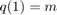
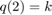
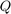
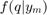
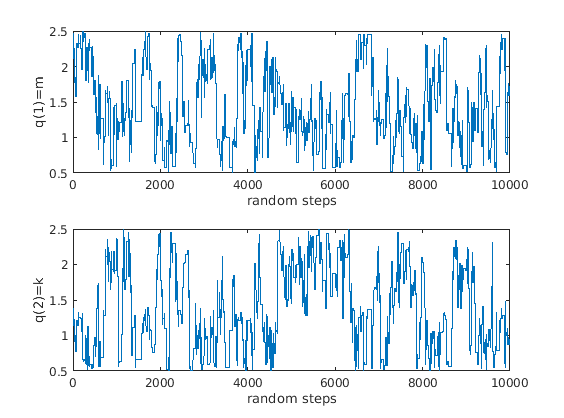
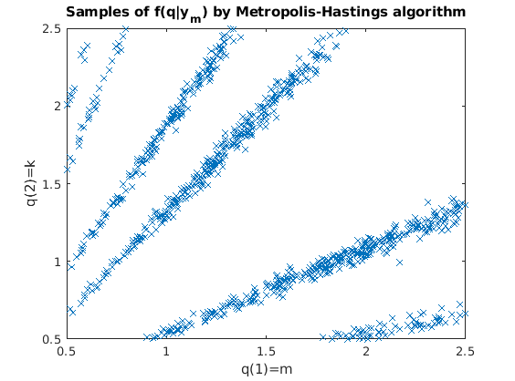

Contents
- Bayesian inversion by the Markov-Chain Monte Carlo method
- Define deterministic problem
- Define the prior distribution of the input parameters 'm' and 'k'
- Define meausrement error model
- Generate a synthetic measurement
- Define prior pdf and likelihood functions
- Define proposal distribution
- Sample from the Bayesian posterior
- Check the random walk
- Plot posterior points
- The acceptance ratio of the new step
function Q = Bayes_MCMC_spring()
Bayesian inversion by the Markov-Chain Monte Carlo method
This is an example of how to generate samples of the Bayesian posterior distribution of the input parameters if measurement of the model is available. The model is the spring example Uncertain input parameters: : mass : stiffness of the spring Measured response: y_m: displacement of the mass at T=10 seconds Output (): samples of the conditional distribution 
Define deterministic problem
Add the folder where the spring solver is to the path
addpath demo/models/spring/ % Initial displacement, initial velocity, time of the measurement, damping: x0=1; v0=0; T=10; d=0; % Define deterministic solver: solve_func = @(q)(spring_solve(x0,v0,q(1),d,q(2),T));
Define the prior distribution of the input parameters 'm' and 'k'
dist_m = gendist_create('uniform',{0.5,2.5}); dist_k = gendist_create('uniform',{0.5,2.5});
Define meausrement error model
dist_e = gendist_create('normal',{0,0.1});
Generate a synthetic measurement
'True value of the parameters 'k' and 'm'
q_true=[0.8;1.5]; % 'True value of the masureable response y_true = solve_func(q_true); % The synthetic masurement (computed by adding measurement noise on the % 'true' value) y_m=y_true+gendist_sample(1, dist_e);
Define prior pdf and likelihood functions
prior_pdf = fm*fk
prior_pdf = @(q)(gendist_pdf(q(1),dist_m)*gendist_pdf(q(2),dist_k));
% likelihood
likelihood = @(q) gendist_pdf(solve_func(q)-y_m, dist_e);
Define proposal distribution
Compute fist two moments of the prior
[mu_m,var_m]=gendist_moments(dist_m); [mu_k,var_k]=gendist_moments(dist_k); % Define proposal distribution p_dist_m = gendist_create('normal',{0,var_m}); p_dist_k = gendist_create('normal',{0,var_k}); % Determine a sampling function that samples from the proposal p_sample = @()([gendist_sample(1,p_dist_m);gendist_sample(1,p_dist_k)]);
Sample from the Bayesian posterior
Number of samples
N=10000; % Determine the start point for Metropolis-Hastings random walk q_0 = [mu_m; mu_k]; % Run the Metropolis-Hastings algorithm Q=mh_sample(N,likelihood,prior_pdf,p_sample,q_0);
Check the random walk
plot the 'm' values
subplot(2,1,1) plot(1:N, Q(1,:)); xlabel('random steps') ylabel('q(1)=m') % plot the 'k' values subplot(2,1,2) plot(1:N, Q(2,:)); xlabel('random steps') ylabel('q(2)=k')
Plot posterior points
figure plot(Q(1,:),Q(2,:),'x') title('Samples of f(q|y_m) by Metropolis-Hastings algorithm') xlabel('q(1)=m') ylabel('q(2)=k')
function Q=mh_sample(N,likelihood,prior_pdf,p_sample,q_0) % MH_SAMPLE Basic version of the Metropolis-Hastings sampler % Number of the burn-in samples M = 0; % Set initial point of the random walk q=q_0; % Initiate an empty matrix for the samples Q=[]; for i=1:N+M
% New random step
qn=q+p_sample();
The acceptance ratio of the new step
If the prior is zero, set the acceptance rate directly to zero (to avoid calling the solver at unphisical values of the parameters)
if prior_pdf(qn)==0 a = 0; else a=(likelihood(qn)*prior_pdf(qn))/(likelihood(q)*prior_pdf(q)); end if a>=1 || rand<a q=qn; end if i>M Q=[Q, q]; end
end